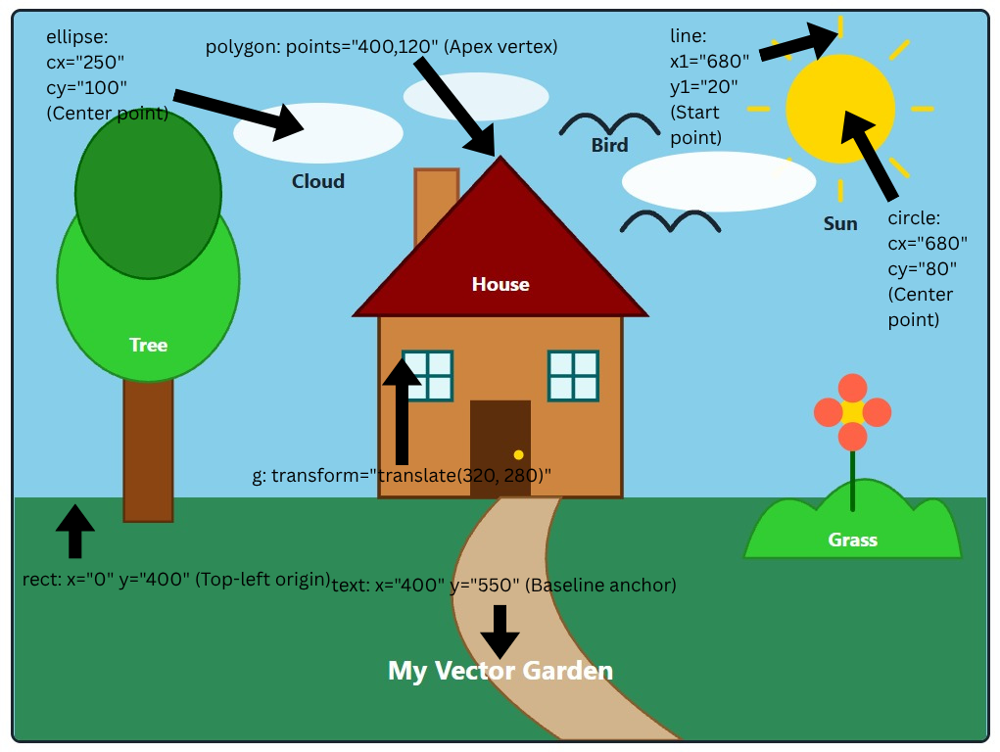

Customised SVG House and Garden
A composite vector illustration demonstrating modified coordinates, dynamic strokes, and new geometric elements.
SVG Coordinate System Analysis
The annotated screenshot below demonstrates how the geometric primitives map to the SVG Cartesian coordinate system, where (0,0) represents the top-left origin.
